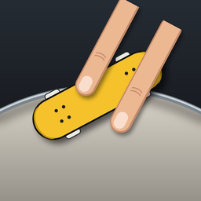

FingerparkPrivacy Policy
Effective 25 September 2026
Fingerpark is a skateboarding game for iPhone. It has no accounts, no ads, no analytics and no tracking, and we don't run a server that receives your data. This page explains what little leaves your phone and why.
What stays on your phone
Your parks, career progress, settings and downloaded map data are stored only on your device. We can't see them. Deleting the app deletes them.
What is sent, and to whom
| What | Sent to | Why |
|---|---|---|
| The map area you're viewing or skating (as map-tile and map-data requests for that area) | OpenStreetMap-based map services (OpenFreeMap, public Overpass servers), Amazon Web Services' open elevation data, and Apple (place names and the map picker) | To download the streets, buildings and terrain for that area |
| Your park description and the current park layout, only when you use “Describe a park” | Anthropic, using the API key you entered | So Claude can design the park you described |
These services receive the requests the same way a web browser's requests reach a website: they see your device's IP address and the area or text requested. We don't send your name, contacts or any identifier, and nothing is linked to you. Each service handles requests under its own privacy policy: OpenStreetMap Foundation, OpenFreeMap, Amazon Web Services, Apple and Anthropic.
Your location
If you allow it, Fingerpark uses your location only to show where you are in the map picker, so you can build a park on your own street. Your location isn't stored or sent anywhere except as the map area requested for that spot, as above. You can turn location access off in Settings at any time; the game works without it.
Describe a park and your API key
“Describe a park” is optional and uses your own Anthropic API key, which is stored in your iPhone's Keychain and sent only to Anthropic with your requests. The app asks before sending anything to Anthropic for the first time. Usage is billed to your Anthropic account under Anthropic's terms. Don't include personal information in park descriptions.
Music
If you let Fingerpark use Apple Music, it reads your library on the device only to let you pick songs. Nothing about your music is sent to us.
Sharing parks
When you share a park, the app creates a code or link that contains the park's layout (and, for real-world parks, the map location it was built at). It goes only where you send it.
Children
Fingerpark doesn't knowingly collect personal information from anyone, including children under 13.
Changes
If this policy changes, the new version will be posted here with a new effective date.
Contact
Questions about privacy: see the support page.